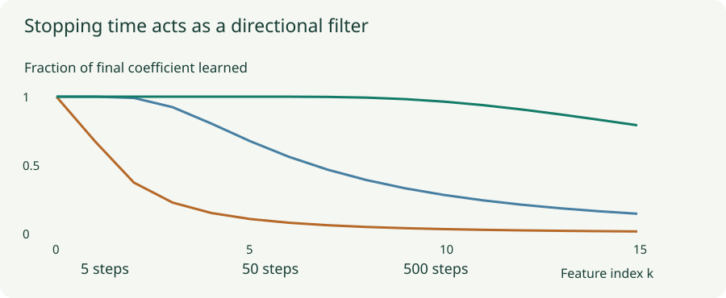

Early Stopping and Implicit Regularization: The Path Matters
Fit a real noisy dataset, select checkpoints honestly, and distinguish optimization choices from explicit penalties.
Early stopping chooses a point along an optimization path instead of always taking its final limit. The hypothesis is that useful structure may be learned before some sample-specific noise. Whether that happens must be measured; a rising validation curve is an observation, not a law that every model must obey.
1. The best checkpoint and the stopping time are different
Suppose validation losses at five checks are $(0.42,0.31,0.28,0.29,0.30)$. With patience two, training may stop at the fifth check, but the best observed checkpoint is the third. Returning the last parameters would discard the very model the validation procedure selected.
Choose the monitored metric, evaluation frequency, minimum improvement, and patience before comparing runs. Patience counts validation checks, which may not equal epochs. If the selected model will resume training, save the optimizer, scheduler, and relevant random state along with its weights. A reference to a mutable parameter object is not a saved checkpoint.
2. Why stopping can act like a regularizer
Consider linear least squares $L(w)=\|Xw-y\|^2/(2N)$, starting at $w_0=0$. Let $H=X^TX/N$ and $b=X^Ty/N$. Gradient descent follows $w_{t+1}=(I-\eta H)w_t+\eta b$.
Choose an eigenvector of $H$ with eigenvalue $s>0$. In that direction, the recurrence is scalar. If the least-squares coordinate is $w^*=b_s/s$, then
The bracket is the fraction of that direction’s final solution learned by time $t$. When $0<\eta s\le1$, directions with larger $s$ are learned faster. Small-eigenvalue directions, whose estimates can be sensitive to noise, remain suppressed for longer. This monotone picture uses the stronger step condition above; the broader stability range $0<\eta s<2$ also permits oscillation.
For $\eta=0.5$ and $t=10$, a direction with $s=1$ has learned about $99.9\%$ of its final coefficient. One with $s=0.02$ has learned only $1-0.99^{10}\approx9.6\%$. Stopping changes which directions have had time to fit.

3. Similar to ridge, but not the same filter
Adding $\lambda\|w\|^2/2$ to the quadratic loss yields a ridge filter $s/(s+\lambda)$ multiplying the least-squares coordinate. Early stopping uses $1-(1-\eta s)^t$. Both can reduce poorly determined directions, but no single $\lambda$ generally makes these different functions agree at all eigenvalues.
Initialization also matters. Starting from nonzero $w_0$ leaves a term $(1-\eta s)^t w_0$ in each direction. A nullspace component with $s=0$ receives no data-gradient update and can retain its initialization. “Early stopping equals L2” is therefore too broad even before considering nonlinear models.
4. Lab: fit actual noisy observations
Training path and validation-selected checkpoint
The target is $\cos(\pi x)+0.3\cos(2\pi x)$ on $[0,1]$. There are 32 training observations and 80 separate validation observations, each with seeded Gaussian noise. The linear model has 16 cosine features, scaled by $1/(k+1)$ for $k=0,\ldots,15$. Starting at zero, full-batch gradient descent uses learning rate $0.8$.
The cosine basis is orthonormal on the training grid, so the recurrence above computes these gradient-descent checkpoints exactly without an iterative numerical solver. The fit chart shows the current checkpoint; the error chart shows the complete path. The clean target is available only because this is a synthetic experiment. Checkpoint selection uses noisy validation observations, not that hidden clean function.
Raise the noise level, then compare the selected checkpoint with the final one. At zero noise, early stopping may offer little advantage. The experiment deliberately makes high-frequency features slower to learn; it demonstrates one mechanism rather than a guarantee about every neural network.
5. Other choices also bias which solution is reached
An overparameterized model may have many training solutions. Its parameterization, initialization, optimizer, learning-rate schedule, and batch sampling influence which one is reached. This preference is called implicit bias or implicit regularization when it favors useful solutions without an explicit added penalty.
A precise example is gradient descent on separable linear logistic regression: under the assumptions of the implicit-bias result, the weight direction approaches a maximum-margin separator even while its norm diverges. The conclusion concerns a direction in a specified setting; it does not say all deep optimizers minimize the same norm.
Mini-batch gradients introduce data-dependent noise, whose covariance changes with parameters, batch construction, and optimizer state. Smaller batches are not interchangeable with an explicit L2 coefficient. Normalization layers can change parameter scaling and optimization geometry; BatchNorm’s batch statistics can also introduce noise. Neither observation makes normalization a universal replacement for deliberate regularization.
6. Parameter averaging is another path-dependent choice
An exponential moving average uses $\bar w_t=\beta\bar w_{t-1}+(1-\beta)w_t$. Stochastic weight averaging instead averages selected checkpoints more directly. Both combine parameters along a trajectory. The resulting network is not generally the same as an ensemble that averages each checkpoint’s predictions, because a nonlinear model does not commute with parameter averaging.
Averaging distant, permutation-misaligned solutions can fail. Batch-normalization running statistics may also need recalibration for averaged weights. Evaluate the averaged model as its own candidate with its actual inference state.
7. Validation is part of training decisions
Repeated checkpoint selection adapts to the validation set. It remains useful for model selection, but its best observed score can be optimistic. Keep an independent final test set, and split by the real unit of independence rather than allowing related samples across partitions.
Use evaluation mode and the same meaningful validation pipeline at each check. If validation is noisy, patience and a minimum improvement can reduce reactions to tiny fluctuations, but they do not prove that a chosen minimum is statistically meaningful. Report the metric that matters for deployment, not whichever curve happens to show the nicest turning point.
Questions with answers
Patience deliberately waits through non-improving checks. Its expiration is a stopping signal, while the best saved checkpoint is the selected predictor.
No. Validation behavior depends on the model, data, optimization path, and metric. The finite-data lab computes an example rather than prescribing a universal curve.
Generally no. Even in linear least squares their spectral filters differ, and initialization contributes additional terms.
Sources
Yao, Rosasco, and Caponnetto, On Early Stopping in Gradient Descent Learning; Soudry et al., The Implicit Bias of Gradient Descent on Separable Data; Izmailov et al., Averaging Weights Leads to Wider Optima and Better Generalization.